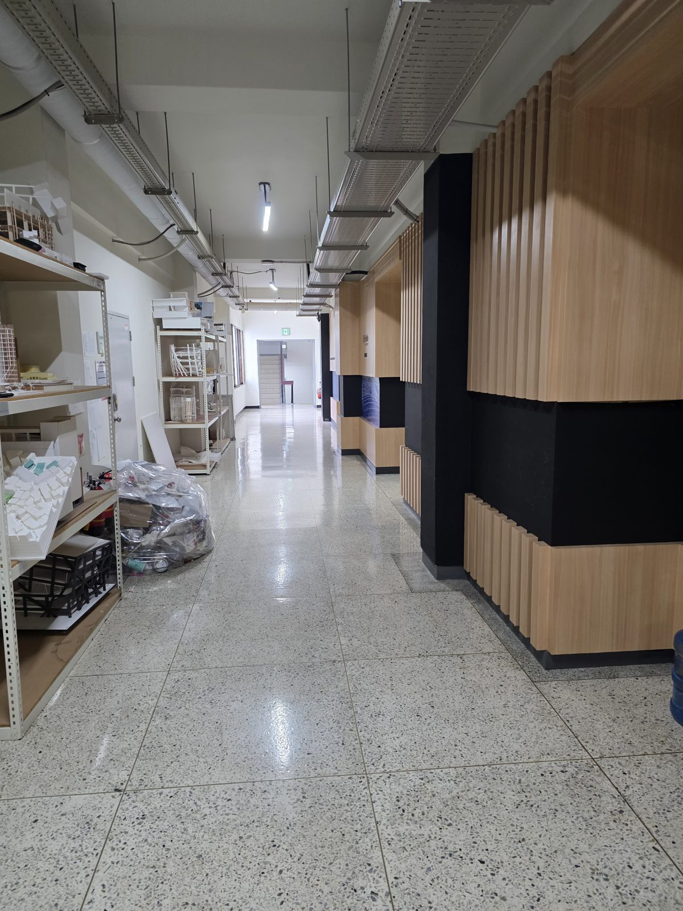
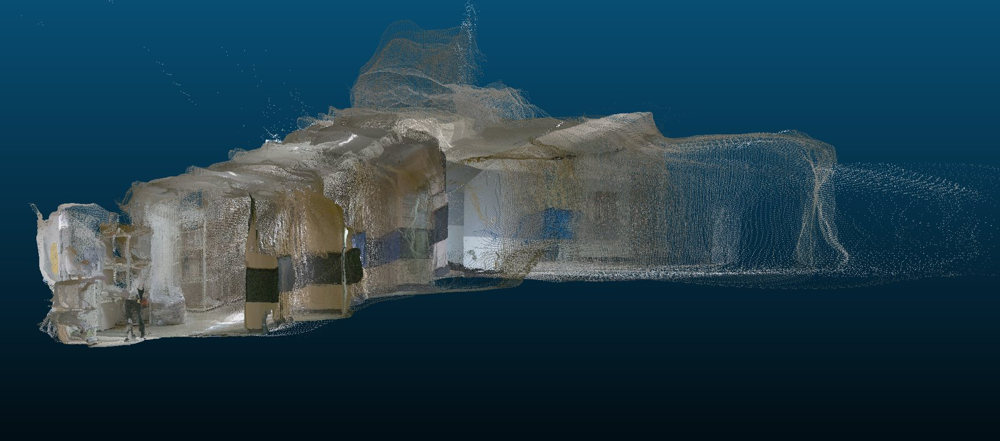

Create a new project
In Week 2 we only made a virtual environment inside an empty folder. This time we make a uv project — a folder that also records which Python version and which libraries it needs. Move to the folder where you keep class work (for example, Documents), then run:
uv init --python 3.12 --no-package facility-scan
cd facility-scanfacility-scan is the project name and the name of the new folder. --python 3.12 pins the project to the Python version we installed in Week 2.
You should see Initialized project `facility-scan`, and your prompt should now be inside the facility-scan folder.
Look at what uv created
Open the project folder in VS Code:
code .uv init created these files:
| pyproject.toml | The project's "ID card": name, Python version, and the list of libraries it needs (dependencies, empty for now). |
| .python-version | The Python version this project uses (3.12). |
| main.py | A sample script that prints a hello message. |
| README.md | Where you describe the project. |
| .git/ · .gitignore | uv also starts a Git repository. .gitignore keeps .venv out of GitHub. |
Open pyproject.toml:
[project]
name = "facility-scan"
version = "0.1.0"
description = "Add your description here"
readme = "README.md"
requires-python = ">=3.12"
dependencies = []Run the sample script:
uv run main.pyIt should print Hello from facility-scan!
Create & activate the virtual environment (review)
Same command as Week 2. Run it inside the project folder:
uv venvNow activate it:
.venv\Scripts\activate.bat.venv\Scripts\Activate.ps1source .venv/bin/activateIn a uv project, uv add and uv run create .venv automatically if it is missing. We make it by hand here so you can see what happens.
Your prompt now starts with (facility-scan).
Add libraries with uv add
Add the four libraries we use today:
| numpy | Number arrays and maths |
| pandas | Tables, such as CSV files |
| matplotlib | Charts and maps |
| open3d | Reading and viewing 3D point clouds |
uv add numpy pandas matplotlib open3dOpen pyproject.toml again. The libraries are now recorded under dependencies (your version numbers may differ):
dependencies = [
"matplotlib>=3.11.2",
"numpy>=2.5.3",
"open3d>=0.20.0",
"pandas>=3.0.6",
]A new file, uv.lock, also appeared. It records the exact version of every package that was installed.
Week 2's uv pip install only installs a package and records it nowhere. uv add installs it and writes it to pyproject.toml and uv.lock. So a classmate who gets your project runs uv sync once and has exactly the same environment. To take a library out, use uv remove name.
Download size: about 80 MB on Windows, 55 MB on macOS, 400 MB on Linux. It takes a while on slow Wi-Fi.
Linux: needs Ubuntu 22.04 or newer.
Check everything imports:
python -c "import numpy, pandas, matplotlib, open3d; print('open3d', open3d.__version__)"A version such as open3d 0.20.0 means success. If you get ModuleNotFoundError, check that .venv is activated.
Get the class data
In September 2026 our UGV, carrying a lidar and a camera, drove through a building corridor and scanned the whole space in 3D. Download that data into a data folder inside your project.


Run this inside the project folder:
curl -L -o class_data.zip https://mugojames254.github.io/smart_facility_coursework/class_data.zip
tar -xf class_data.zipcurl.exe -L -o class_data.zip https://mugojames254.github.io/smart_facility_coursework/class_data.zip
tar -xf class_data.zipIn PowerShell, curl is an alias for a different command, so type curl.exe.
curl -L -o class_data.zip https://mugojames254.github.io/smart_facility_coursework/class_data.zip
unzip class_data.zipCommands not working? Click Download class data at the top of this page and unzip the file into your project folder instead. What's inside:
| robot_trajectory.csv | Robot position about every 0.1 s over a 10.5 min, 64 m run (4,856 rows). Columns: t_s (seconds since start), x_m, y_m, z_m (metres), orientation quaternion. |
| lidar_map.ply | 3D map built by the lidar during the same run (520k points). Same coordinate frame as the trajectory. |
| facility_scan_color.ply | 3D scan colored by the camera (660k points). |
| design.ifc | BIM design (IFC) of the same corridor, used in the step 8 exercise. |
| *.png · *.jpg | Preview images and a site photo. |
| README.md | Notes describing the data. |
In the VS Code explorer you should see robot_trajectory.csv inside facility-scan/data/. Make sure it isn't nested twice, like data/data/.
First look: where did the robot go?
A facility manager's first questions: how long was the inspection route, how long did it take, and which parts of the building did it cover? In VS Code, create a new file first_look.py and paste this in:
import numpy as np
import pandas as pd
import matplotlib.pyplot as plt
import open3d as o3d
# 1. The robot's route
traj = pd.read_csv("data/robot_trajectory.csv")
step = np.hypot(traj["x_m"].diff(), traj["y_m"].diff())
distance = step.sum()
duration = traj["t_s"].iloc[-1]
print(f"Poses recorded : {len(traj)}")
print(f"Duration : {duration / 60:.1f} min")
print(f"Distance : {distance:.1f} m")
print(f"Average speed : {distance / duration:.2f} m/s")
# 2. The 3D scans
lidar = o3d.io.read_point_cloud("data/lidar_map.ply")
photo = o3d.io.read_point_cloud("data/facility_scan_color.ply")
print(f"Lidar map : {len(lidar.points):,} points")
print(f"Photo scan : {len(photo.points):,} points")
# 3. Top-down view: lidar map + robot path
pts = np.asarray(lidar.points)
plt.figure(figsize=(8, 8))
plt.scatter(pts[:, 0], pts[:, 1], s=0.2, c="lightgray")
plt.plot(traj["x_m"], traj["y_m"], lw=1.5, label="robot path")
plt.plot(traj["x_m"].iloc[0], traj["y_m"].iloc[0], "go", label="start")
plt.axis("equal")
plt.xlabel("x [m]")
plt.ylabel("y [m]")
plt.legend()
plt.title("UGV inspection run — top view")
plt.savefig("route_map.png", dpi=150)
print("Saved route_map.png")
plt.show()Run it with .venv activated:
python first_look.pyuv run first_look.py gives the same result. uv run always uses the project's .venv, even when it is not activated.
What was the robot's top speed? Hint: the maximum of step / traj["t_s"].diff().
Walk around the building in 3D
Now open the colour scan in a 3D window and turn the corridor around yourself, the way the robot saw it. Create a new file view_scan.py and paste this in:
import open3d as o3d
# 1. Load the colour scan (a .ply point cloud file)
pcd = o3d.io.read_point_cloud("data/facility_scan_color.ply")
# 2. Print a one-line summary: how many points it has
print(pcd)
# 3. Open an interactive 3D window (close it to end the script)
o3d.visualization.draw_geometries([pcd], window_name="Facility scan")python view_scan.pyA 3D window opens. It starts looking straight down from above, so it looks flat at first — drag with the mouse to tilt it and the walls and corridors appear in 3D.
| Left-drag | Rotate |
| Scroll wheel | Zoom in / out |
| Ctrl + drag | Move sideways (pan) |
| + / − | Bigger / smaller points — zoom in and press − to see individual points |
| R | Reset the view |
| H | Print all shortcuts (in the terminal) |
The window has to open on your own laptop screen — it can't open over a remote (SSH) connection. If the script seems stuck and never finishes, the window is probably hidden behind another one; check your taskbar or dock.
Change the file name to data/lidar_map.ply and open the lidar map too. How does it differ from the colour scan? Can you find the shelving, the wall panels and the stairs at the end of the corridor from the site photo?
Keep every point where it is and change only the colouring rule. Create view_height.py — blue = low, red = high:
import numpy as np
import matplotlib.pyplot as plt
import open3d as o3d
pcd = o3d.io.read_point_cloud("data/facility_scan_color.ply")
# colour every point by its height (z): blue = low, red = high
z = np.asarray(pcd.points)[:, 2]
low, high = np.percentile(z, [1, 99]) # ignore a few stray points
z01 = np.clip((z - low) / (high - low), 0, 1)
pcd.colors = o3d.utility.Vector3dVector(plt.cm.turbo(z01)[:, :3])
o3d.visualization.draw_geometries([pcd], window_name="Facility scan — coloured by height")Exercise: Check the building against its design
Background. Before a building is built, the architect makes a BIM model, an IFC file that says where every wall should be. That's the as-designed building. Our robot scanned the corridor after it was built. That's the as-built building. Construction is never perfect. Your job is to find where the real building is different from the design.
You are given (in class_data.zip, folder data/):
| design.ifc | The design (BIM model) of the corridor: walls and floor. |
| facility_scan_color.ply | The robot's scan of the same corridor (you used it in Week 4). |
Both files use the same coordinates, so they already line up.
If you downloaded the data in step 5 before design.ifc was added, download and unzip class_data.zip again. Then add the IFC library:
uv add ifcopenshellYour task. In your facility-scan project, create check_bim.py. When you run it, it must:
- Open the design and print the name of every wall.
- For every wall, measure how far the scanned wall is from the designed wall.
- Print one line per wall, e.g.
WL_A gap 0.01 m OK. - Show the design in a 3D window with each wall coloured:
- green: built as designed (gap 5 cm or less)
- red: built differently (gap more than 5 cm)
One wall in this corridor was not built where the design says. Find it.
Hand in:
check_bim.py- Your answer: which wall changed, and by about how much (in cm)?